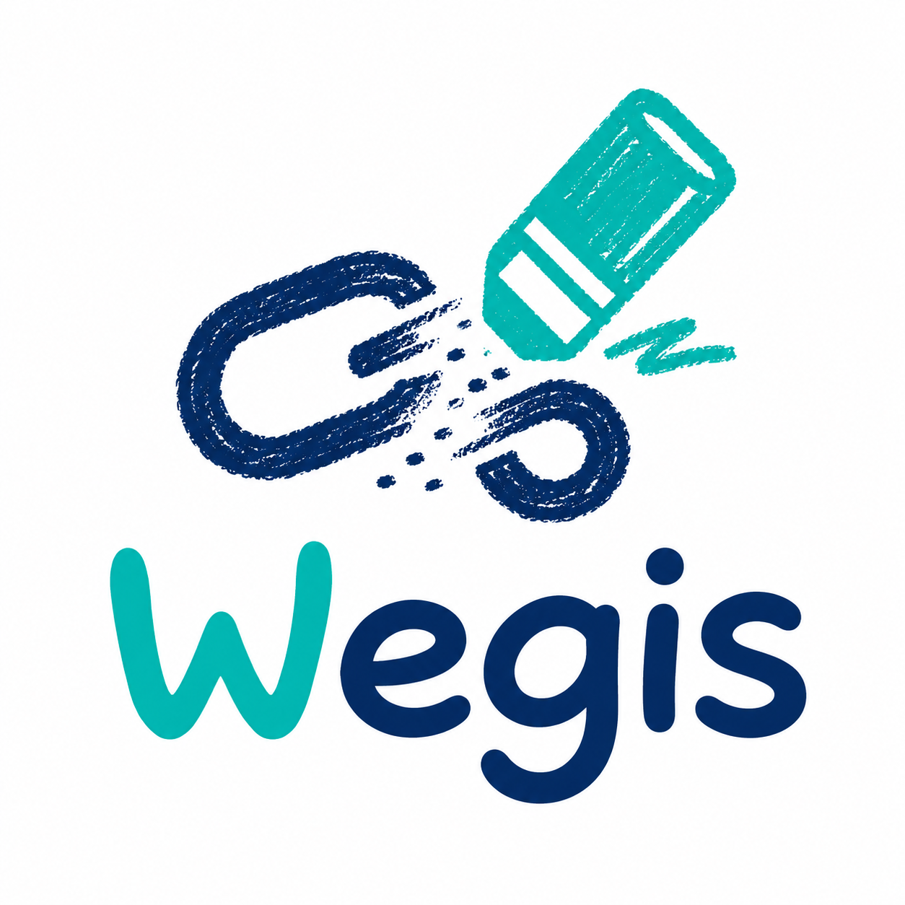

위험한 링크를 크레용처럼 슥— 지워주는 브라우저 확장
✏️ 시연 방법
-
chrome://extensions→ 개발자 모드 켜기 → 압축해제된 확장 프로그램을 로드 → Wegis 폴더 선택 - 툴바의 Wegis 아이콘으로 보호가 켜져 있는지 확인 후 이 페이지 새로고침
- 위험 링크는 크레용으로 슥슥 지워지고, 클릭하면 경고가 뜹니다
크레용 효과는 Wegis 서버(api.bnbong.com)가 해당 링크를
위험으로 판정할 때 나타납니다. QR/다운로드는 고위험으로 분류되어 서버
판정과 무관하게 경고가 표시됩니다.
🎣 피싱 의심 링크
위험 판정 시 아래 링크들이 크레용으로 지워지고 클릭이 차단됩니다.
✅ 정상 링크
정상 링크는 그대로 둡니다. 과도하게 지우지 않아요.
- 정상 www.google.com
- 정상 www.wikipedia.org
- 정상 github.com
📷 비정상 QR 코드
위험하거나 검증 불가한 QR 위에는 크레용 색칠 오버레이가 덮여, 휴대폰으로 찍을 수 없게 막습니다.
⬇️ 위험 다운로드 링크
클릭하면 다운로드 전에 경고 모달이 뜹니다.
- 실행파일 security-update.exe
- 이중 확장자 invoice.pdf.exe
- 압축 파일 photos.zip?token=abc123